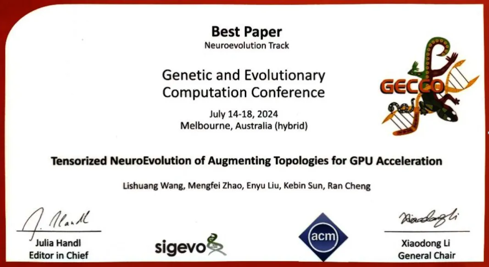

- Implemented the NEAT algorithm using the JAX framework for tensorized representation and parallel computation.
- Achieved 10-100x speedup compared to Python-NEAT.
I was responsible for simplifying the design of the NEAT algorithm, conducting comprehensive
experimental research, and testing its performance against other algorithms. I also fine-tuned
the parameters to enhance the overall efficiency of the algorithm.

Humanoid Pruning Visualization
Below is a visualization of a humanoid model with only 3,000 parameters. Despite the reduction
in parameters, the pruned model performs similarly to the original model, which has 100,000
parameters. This is a testament to the effectiveness of the INCEPT algorithm in reducing model
complexity while maintaining high performance.
PPO Real-Time Obstacle Avoidance on CARLA Platform
In this project, I implemented PPO for real-time obstacle avoidance on the CARLA simulation platform,
a popular platform for autonomous driving research. The goal was to train an agent to navigate a complex
environment while avoiding obstacles in real time.
Below is a video showing the PPO agent navigating the CARLA platform, avoiding obstacles, and successfully
reaching its navigation point.
INCEPT on Genesis Platform
Currently, I am working on migrating the INCEPT algorithm to the Genesis platform, which will allow us
to conduct extensive experimentation and further evaluate the algorithm's performance across different
robotic tasks.
Below is a video showing the drone controlled by a tiny model with only 3500 parameters.